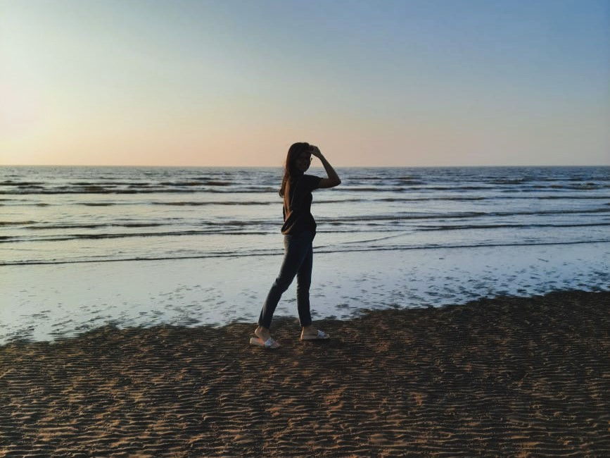

About Me,

Hello, I am Devanshi Singh!
An Amateur Photographer
I am an Electronics and Telecommunication Engineer passionate about Travelling and Photography. The beauty and raw emotions of eveything around have always captivated me. I like to explore and capture these memories and moments through my lens.